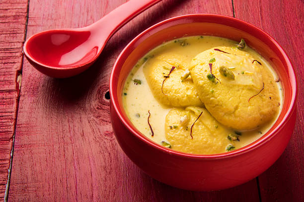
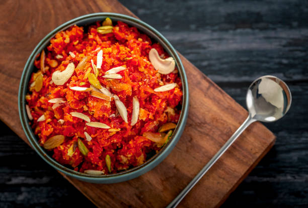
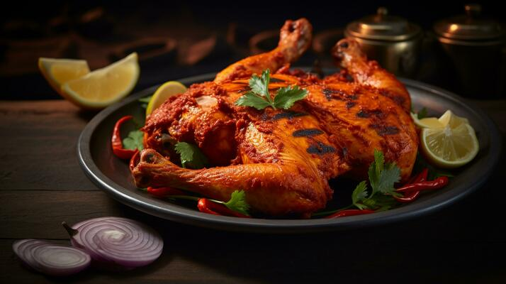

Main Courses

Masala Dosa
Ingredients:
- Dosa batter: 2 cups
- Potatoes: 2, boiled and mashed
- Onions: 1, chopped
- Mustard seeds: 1 tsp
- Curry leaves: A few
- Turmeric powder: 1/2 tsp
- Salt to taste
Instructions:
- Heat oil in a pan, add mustard seeds, curry leaves, and onions.
- Add turmeric powder, salt, and mashed potatoes. Mix well.
- Spread dosa batter on a hot griddle and cook until golden.
- Place the potato filling inside the dosa and fold.
- Serve hot with sambar and coconut chutney.

Chole Bhature
Ingredients:
- Chickpeas (Chole): 1 cup, soaked overnight
- Onion: 1, chopped
- Tomato puree: 1 cup
- Ginger-garlic paste: 1 tbsp
- Spices: Garam masala, turmeric, red chili powder, cumin
- Salt to taste
- Oil: 2 tbsp
- For Bhature:
- All-purpose flour (Maida): 2 cups
- Yogurt: 1/2 cup
- Baking soda: 1/2 tsp
- Salt to taste
- Oil for deep frying
Instructions:
- Pressure cook the soaked chickpeas until soft, and set aside.
- Heat oil in a pan, add chopped onions, and sauté until golden brown.
- Add ginger-garlic paste and cook for a minute.
- Stir in the tomato puree, spices, and salt. Cook until the oil separates.
- Add the cooked chickpeas and simmer for 10-15 minutes.
- For Bhature, mix all-purpose flour, yogurt, baking soda, and salt to form a soft dough. Let it rest for 1 hour.
- Roll the dough into large circles and deep fry until golden brown.
- Serve the hot bhature with chole and enjoy!

Chicken Biryani
Ingredients:
- Chicken: 500g
- Basmati rice: 2 cups
- Yogurt: 1/2 cup
- Onions: 2, sliced
- Ginger-garlic paste: 2 tbsp
- Spices: Garam masala, turmeric, cumin, coriander
- Salt to taste
Instructions:
- Marinate chicken in yogurt, spices, and salt for 1 hour.
- Cook onions until golden, add ginger-garlic paste and marinated chicken.
- Cook the chicken until done, then layer with partially cooked rice.
- Cover and cook on low heat until rice is fully cooked.
- Garnish with fried onions and serve hot.
Sides

Butter Chicken
Ingredients:
- Chicken: 500g
- Yogurt: 1 cup
- Butter: 50g
- Tomato puree: 1 cup
- Cream: 1/2 cup
- Spices: Garam masala, turmeric, red chili powder
- Salt to taste
Instructions:
- Marinate the chicken in yogurt, spices, and salt for 1 hour.
- Cook the marinated chicken in butter until golden brown.
- Add tomato puree and cook for another 10 minutes.
- Stir in cream, simmer for 5 minutes, and serve hot with naan or rice.

Paneer Tikka
Ingredients:
- Paneer: 250g, cubed
- Yogurt: 1/2 cup
- Lemon juice: 1 tbsp
- Spices: Garam masala, turmeric, red chili powder
- Salt to taste
- Bell peppers and onions: 1 cup, cubed
Instructions:
- Mix yogurt, lemon juice, spices, and salt in a bowl.
- Add paneer, bell peppers, and onions to the marinade, and coat well.
- Marinate for 30 minutes.
- Grill or bake until paneer is golden and slightly charred.
- Serve hot with mint chutney.
Channa Masala
Ingredients:
- Chickpeas: 2 cups (soaked overnight)
- Onions: 2, finely chopped
- Tomatoes: 2, pureed
- Ginger-garlic paste: 1 tbsp
- Spices: Garam masala, cumin, coriander, turmeric
- Salt to taste
Instructions:
- Cook soaked chickpeas in a pressure cooker until soft.
- In a pan, sauté onions until golden, then add ginger-garlic paste and cook for 2 minutes.
- Add tomato puree and spices, cook until the oil separates.
- Add cooked chickpeas, mix well, and simmer for 15 minutes.
- Garnish with coriander leaves and serve hot with rice or bread.
Desserts

Gulab Jamun
Ingredients:
- Khoya: 200g
- Maida (flour): 2 tbsp
- Baking soda: A pinch
- Sugar: 2 cups
- Water: 1 cup
- Cardamom powder: 1/2 tsp
- Oil for frying
Instructions:
- Mix khoya, maida, and baking soda to form a smooth dough.
- Shape the dough into small balls and fry until golden brown.
- Prepare sugar syrup by boiling sugar, water, and cardamom powder.
- Soak the fried balls in hot sugar syrup.
- Serve warm or at room temperature.

Rasmalai
Ingredients:
- Milk: 1 liter
- Lemon juice: 2 tbsp
- Sugar: 1 cup
- Water: 3 cups
- Saffron: A few strands
- Cardamom powder: 1/2 tsp
- Almonds and pistachios: 2 tbsp, chopped
Instructions:
- Boil milk, add lemon juice to curdle it, and strain to get chhena (paneer).
- Knead the chhena into a smooth dough and shape into small, flat discs.
- Boil sugar and water to make syrup, add the discs, and cook until they expand and soften.
- In another pan, boil milk, saffron, and cardamom powder until thickened.
- Add the cooked discs to the thickened milk and refrigerate for a few hours.
- Garnish with chopped nuts and serve chilled.

Jalebi
Ingredients:
- All-purpose flour (Maida): 1 cup
- Yogurt: 1/2 cup
- Water: As needed to make a batter
- Sugar: 2 cups
- Water: 1 cup
- Saffron: A few strands
- Cardamom powder: 1/2 tsp
- Oil or ghee for frying
Instructions:
- Mix all-purpose flour, yogurt, and water to form a thick batter. Let it ferment for 6-8 hours.
- Prepare sugar syrup by boiling sugar, water, saffron, and cardamom powder until sticky.
- Heat oil or ghee in a pan. Pour the batter into a piping bag or squeeze bottle.
- Pipe the batter into hot oil in circular shapes and fry until golden and crispy.
- Immediately dip the fried jalebis in warm sugar syrup for a few seconds.
- Serve warm or at room temperature.
Festive Specials
Eid-al-Fitr
Mutton Biryani
Ingredients:
- Mutton: 500g
- Basmati rice: 2 cups
- Yogurt: 1/2 cup
- Onions: 2, sliced
- Ginger-garlic paste: 2 tbsp
- Spices: Garam masala, turmeric, cumin, coriander
- Salt to taste
Instructions:
- Marinate mutton in yogurt, spices, and salt for 1 hour.
- Cook onions until golden, add ginger-garlic paste and marinated mutton.
- Cook the mutton until tender, then layer with partially cooked rice.
- Cover and cook on low heat until rice is fully cooked.
- Garnish with fried onions and serve hot.
Chicken Pakoras
Ingredients:
- Boneless chicken: 500g, cut into small pieces
- Gram flour (besan): 1 cup
- Ginger-garlic paste: 1 tbsp
- Spices: Red chili powder, turmeric, cumin, coriander
- Salt to taste
- Oil for deep frying
Instructions:
- In a bowl, mix chicken pieces with spices, ginger-garlic paste, and salt.
- Add gram flour and mix well to coat the chicken pieces.
- Heat oil in a deep pan and fry the chicken pieces until golden brown.
- Drain on paper towels and serve hot with chutney.

Carrot Halwa
Ingredients:
- Carrots: 4, grated
- Milk: 2 cups
- Sugar: 1/2 cup
- Ghee: 2 tbsp
- Cardamom powder: 1/2 tsp
- Cashews and raisins for garnish
Instructions:
- In a pan, cook grated carrots in milk until soft and milk is absorbed.
- Add sugar and ghee, cook until the mixture thickens.
- Add cardamom powder and cook for a few more minutes.
- Garnish with cashews and raisins and serve warm.
Diwali

Tandoori Chicken
Ingredients:
- Chicken: 1 whole, cut into pieces
- Yogurt: 1 cup
- Lemon juice: 2 tbsp
- Ginger-garlic paste: 2 tbsp
- Spices: Garam masala, turmeric, red chili powder, cumin
- Salt to taste
Instructions:
- Marinate chicken with yogurt, lemon juice, spices, and salt for at least 4 hours.
- Preheat the oven or grill to high heat.
- Cook the chicken pieces until done, basting with marinade occasionally.
- Serve hot with mint chutney and lemon wedges.
Samosas
Ingredients:
- Potatoes: 3, boiled and mashed
- Green peas: 1/2 cup
- Onions: 1, finely chopped
- Spices: Garam masala, turmeric, cumin, coriander
- Salt to taste
- Oil for deep frying
- Pastry sheets or dough
Instructions:
- Sauté onions until soft, then add spices, peas, and mashed potatoes. Cook for a few minutes.
- Fill the pastry sheets with the potato mixture and fold into triangles.
- Deep fry the samosas until golden brown.
- Serve hot with chutney.
Cardamom Burfi
Ingredients:
- Milk powder: 2 cups
- Sugar: 1 cup
- Ghee: 1/4 cup
- Cardamom powder: 1/2 tsp
- Milk: 1/2 cup
- Pistachios for garnish
Instructions:
- In a pan, mix milk powder, sugar, and milk. Cook on low heat until it thickens.
- Add ghee and cardamom powder, stirring continuously.
- When the mixture leaves the sides of the pan, pour it onto a greased plate.
- Spread evenly and garnish with pistachios. Let it cool, then cut into squares.
- Serve once fully set.
Christmas

Grilled Chicken
Ingredients:
- Chicken breasts: 4
- Lemon juice: 2 tbsp
- Olive oil: 2 tbsp
- Garlic: 4 cloves, minced
- Spices: Paprika, cumin, black pepper
- Salt to taste
Instructions:
- Marinate chicken breasts with lemon juice, olive oil, garlic, spices, and salt for 30 minutes.
- Preheat the grill to medium-high heat.
- Grill chicken for 5-7 minutes on each side or until fully cooked.
- Serve hot with a side salad or vegetables.
Plum Cake
Ingredients:
- All-purpose flour: 2 cups
- Butter: 1 cup
- Sugar: 1 cup
- Eggs: 3
- Dried fruits and nuts: 1 cup
- Spices: Cinnamon, nutmeg, cloves
- Vanilla extract: 1 tsp
Instructions:
- Preheat the oven to 180°C (350°F). Grease and line a cake tin.
- Cream butter and sugar until light and fluffy, then add eggs one at a time.
- Fold in flour, spices, dried fruits, nuts, and vanilla extract.
- Pour the batter into the prepared tin and bake for 45-50 minutes.
- Allow the cake to cool, then slice and serve.
Christmas Cookies
Ingredients:
- All-purpose flour: 2 cups
- Butter: 1 cup
- Sugar: 1 cup
- Egg: 1
- Vanilla extract: 1 tsp
- Colorful sprinkles for decoration
Instructions:
- Preheat the oven to 180°C (350°F). Line a baking sheet with parchment paper.
- Cream butter and sugar until fluffy, then add egg and vanilla extract.
- Gradually add flour and mix until a dough forms.
- Roll out the dough and cut into shapes using cookie cutters.
- Place on the baking sheet, decorate with sprinkles, and bake for 10-12 minutes.
- Allow to cool before serving or storing.